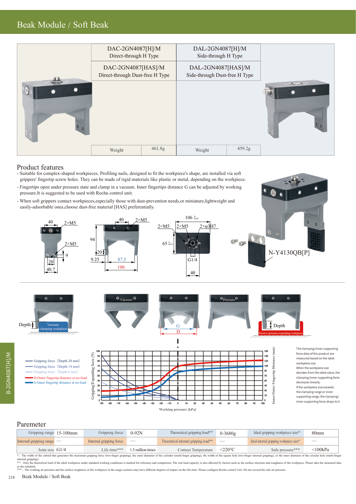

DAC-2GN4087[H]/M.
Four products.
Catalog candidate DAC-2GN4087[H]/M: one module with two inward-facing jaws. Dessert container proposal: 80 x 100 x 60 mm, gripped across its 80 mm width. Other products retain their dimensions.
Interactive 3D grasp detail
Loading model...
Drag to rotate; pinch or scroll to zoom. One fixed module; only the lower jaw shapes move. Model dimensions follow the catalog envelope.The module is an approximate catalog envelope, not OEM STEP. Jaw rotation illustrates opening/contact, not a validated material or pressure law. Positive pressure opens; vacuum clamps. Catalog workpiece range 15-100 mm is not certified actuator stroke. Carton entry is 10 mm deeper, increasing projected jaw overlap from 8.7 to 18.7 mm. This is not a verified increase in contact area or load capacity.
Dimensions
Module envelope: 106 x 65 x 94 mm. Neutral inner gap: 87.5 mm. Catalog ideal workpiece width: 80 mm. Gripping G below is the model's distal inner-tip gap, not product width or a pressure setting.
| Product | W x D x H (mm) | Open / contact G (mm) |
|---|---|---|
| Dough portion | 74.1 x 75.0 x 45.7 | 100.0 / 73.0 |
| Drink can | 65.0 x 65.5 x 115.0 | 100.0 / 65.0 |
| Dessert container | 80.0 x 100.0 x 60.0 | 100.0 / 80.0 |
| Closed pizza carton | 320.0 x 320.0 x 45.0 | 100.0 / 45.0 |
All four products — one technical sheet
Dimensions in mm. Open the sheet to zoom or print.
![DAC-2GN4087[H]/M: four product dimensions and grasp sections on one sheet](all-products.png?v=5)
Manufacturer catalog — selected product
DAC-2GN4087[H]/M, upper-left model on printed page 218. Original manufacturer drawing and specifications.
Show the original catalog page
